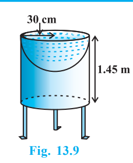
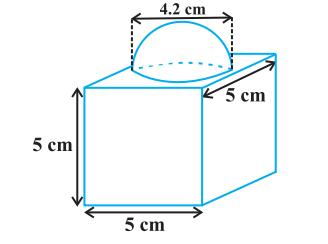
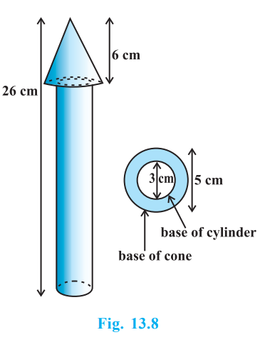

1) Mayank made a bird-bath for his garden
in the shape of a cylinder with a hemispherical
depression at one end (see Fig. 13.9). The height of
the cylinder is 1.45 m and its radius is 30 cm. Find the
toal surface area of the bird-bath. (Take π = 22/7)

Solution : Let h be height of the cylinder, and r the
common radius of the cylinder and hemisphere.
Then,
the total surface area of the bird-bath = CSA of cylinder + CSA of hemisphere
= 2πrh + 2πr 2
= 2π r(h + r)
= 2 x 22/7 x 30(145+30)
= 33000 cm2 = 3.3 m 2
2) The decorative block shown in Fig. 13.7 is made of two solids — a cube and a hemisphere. The base of the block is acube with edge 5 cm, and the hemisphere fixed on the top has a diameter of 4.2 cm.
Find the total surface area of the block.
(Take π =22/7 )

Solution : The total surface area of the cube = 6 × (edge)2 = 6 × 5 × 5 cm2
= 150 cm2.
Note that the part of the cube where the hemisphere is attached is not included in the
surface area.
So, the surface area of the block = TSA of cube – base area of hemisphere
+ CSA of hemisphere
= 150 – πr2 + 2 πr2 = (150 + πr2) cm2
= 150 + (22/7 x 4.2/2 x 4.2/2)
= (150 + 13.86) cm2
= 163.86 cm2
3) A wooden toy rocket is in the shape of a cone mounted on a cylinder, as shown in Fig. 13.8. The height of the entire rocket is 26 cm, while the height of the conical part is 6 cm. The base of the conical portion has a diameter of 5 cm, while the base
diameter of the cylindrical portion is 3 cm. If
the conical portion is to be painted orange
and the cylindrical portion yellow, find the
area of the rocket painted with each of these
colours. (Take π = 3.14)

Solution : Denote radius of cone by r, slant
height of cone by l, height of cone by h, radius
of cylinder by r′ and height of cylinder by h′.
Then r = 2.5 cm, h = 6 cm, r′ = 1.5 cm,
h′ = 26 – 6 = 20 cm and
l = √ r+h => 6.5 cm
Here, the conical portion has its circular base resting on the base of the cylinder, but
the base of the cone is larger than the base of the cylinder. So, a part of the base of the
cone (a ring) is to be painted.
So, the area to be painted orange = CSA of the cone + base area of the cone – base area of the cylinder
= πrl + πr2 – π(r′)^2
= π[(2.5 × 6.5) + (2.5)2 – (1.5)2] cm2
= π[20.25] cm2
= 3.14 × 20.25 cm 2
= 63.585 cm 2
Now, the area to be painted yellow = CSA of the cylinder + area of one base of the cylinder
= 2πr′h′ + π(r′) 2
= πr′ (2h′ + r′)
= (3.14 × 1.5) (2 × 20 + 1.5) cm 2
= 4.71 × 41.5 cm2
= 195.465 cm 2